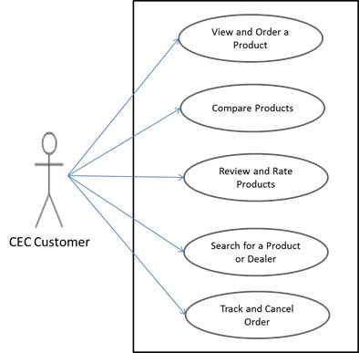
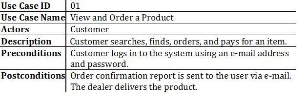
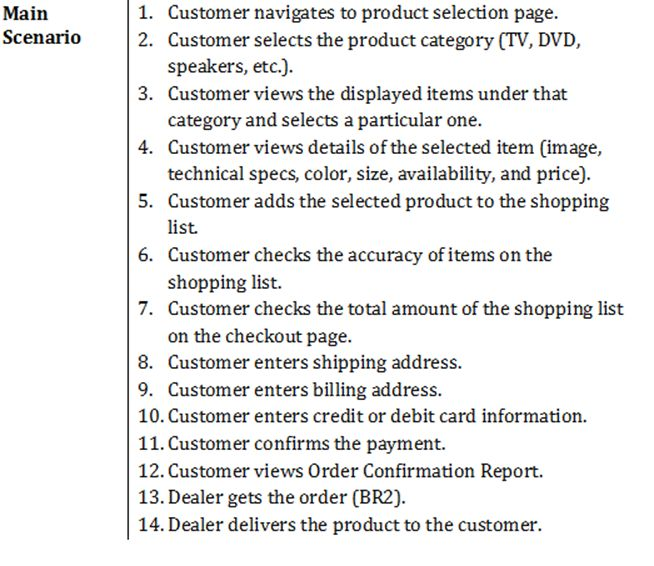
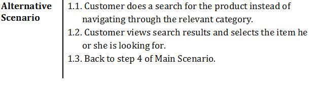
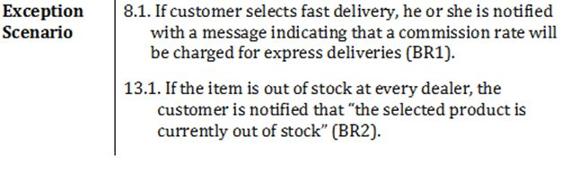
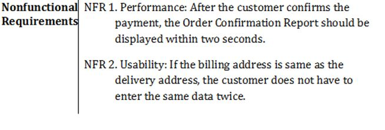
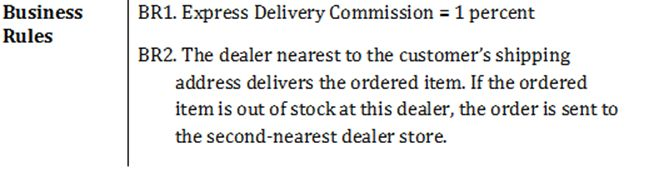
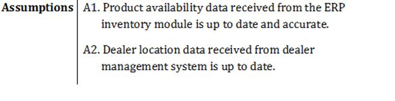
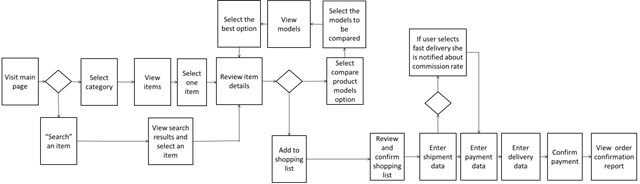

Viết tài liệu yêu cầu
Các tính năng mà khách hàng không sử dụng sau khi phát hành là một nguồn lãng phí lớn. Nguyên nhân chính của vấn đề này là do phương pháp phân tích và thiết kế lấy sản phẩm làm trung tâm thiếu tập trung vào khách hàng.
Việc xác định chi tiết các yêu cầu của người dùng bằng cách sử dụng kỹ thuật “ca sử dụng” (use case) trong phương pháp Waterfall và kỹ thuật “câu chuyện người dùng” (user story) trong phương pháp Agile sẽ giúp các nhóm dự án tập trung vào khách hàng hơn.
Kỹ thuật Use Case
Trong phân tích theo hướng ca sử dụng của phương pháp Waterfall, các yêu cầu của người dùng được xác định theo ba bước:
-
Ai là tác nhân?
Các tác nhân mục tiêu được xác định.
-
Mục đích (ca sử dụng) của các tác nhân là gì?
Yêu cầu của người dùng (ca sử dụng) tương ứng với mục đích của các tác nhân. Các ca sử dụng được hiển thị trên biểu đồ ca sử dụng, biểu đồ này cũng minh họa phạm vi chức năng ở mức cao.
Đối với dự án phát triển ứng dụng di động CEC, sơ đồ ca sử dụng dưới đây được xác định:
 -
Các tác nhân sẽ đạt được mục tiêu như thế nào?
Trong phương pháp Waterfall, các hoạt động của các tác nhân để đạt được mục đích của họ có thể được thể hiện trên các tài liệu ca sử dụng.
Như đã đề cập trước đó, phạm vi giai đoạn đầu của dự án ứng dụng di động CEC chỉ bao gồm các ca sử dụng “Xem và đặt hàng sản phẩm” và “So sánh sản phẩm”. Sự tương tác của khách hàng CEC với ứng dụng di động để đạt được những mục tiêu này đã được xác định trên các tài liệu ca sử dụng. Ca sử dụng "Xem và đặt hàng một sản phẩm" được ghi lại như sau:

Trong tài liệu ca sử dụng, những quy tắc thực tiễn tốt nhất (best practices) sau đây nên được xem xét:
-
Các tình huống trên tài liệu ca sử dụng mô tả hoạt động của các tác nhân trong lúc (thực hiện để) đạt mục tiêu của họ.
-
Mỗi bước trong tình huống (hoạt động) tương ứng với một yêu cầu chức năng.
Trong khi áp dụng kỹ thuật ca sử dụng, có thể có sự nhầm lẫn về sự khác biệt giữa ca sử dụng và yêu cầu chức năng. Thực ra nó khá đơn giản. Mỗi ca sử dụng đại diện cho một mục tiêu cụ thể của một tác nhân, trong khi các hoạt động để đạt được mục tiêu đó là các yêu cầu chức năng.
Chúng ta hãy giải thích mối quan hệ này bằng một phép loại suy như sau: Nếu một cái chai được coi là một sản phẩm, thì “nước uống” là một ca sử dụng, vì nó là mục đích của một tác nhân khi sử dụng chai. Nhưng “mở nắp chai” không phải là một ca sử dụng, bởi vì nó không phải là mục đích cụ thể của tác nhân. Mọi người không mua chai để mở và đóng nắp. Mở nắp chai chỉ là một yêu cầu chức năng để đạt được mục đích là “nước uống”.
Tương tự, “Xem và Đặt hàng Sản phẩm” là một ca sử dụng cho ứng dụng di động CEC, trong khi “lựa chọn danh mục” là một trong số yêu cầu chức năng để đạt được ca sử dụng cụ thể đó.
-
Tách biệt các tình huống chính, tình huống thay thế và ngoại lệ của ca sử dụng.
Tình huống chính trên tài liệu ca sử dụng đại diện cho luồng tích cực (con đường hạnh phúc) của các hoạt động nhằm đạt được mục đích của tác nhân trong điều kiện bình thường.
Các tình huống thay thế xác định những cách khả thi khác để đạt được cùng một mục đích.
Các tình huống ngoại lệ xác định các hoạt động của người dùng trong các điều kiện ngoại lệ và lỗi.
Đối với ca sử dụng “Xem và đặt hàng sản phẩm” trong ứng dụng di động CEC, nếu việc tìm kiếm một mặt hàng bằng cách điều hướng qua các danh mục được mô tả trong tình huống chính, thì các hoạt động rời rạc cần thiết để tìm mặt hàng đó bằng cách sử dụng chức năng “Tìm kiếm” sẽ được xác định trong một tình huống thay thế. Tương tác giữa khách hàng và ứng dụng di động CEC khi khách hàng cố gắng đặt một mặt hàng đã hết cần được định nghĩa là một tình huống ngoại lệ.
-
Xác định các tình huống ngoại lệ tách biệt với các tình huống thay thế.
Các tình huống thay thế có thể bao gồm một số điều kiện có-thì-tốt có thể bị hoãn lại cho đến khi phát hành trong tương lai, trong trường hợp có độ trễ trong dự án. Tuy nhiên, các tình huống ngoại lệ bao gồm các điều kiện lỗi và chúng phải được thực hiện trong mọi trường hợp.
-
Các tài liệu ca sử dụng nhằm mục đích trả lời câu hỏi cái gì (chức năng cần thiết để đáp ứng các yêu cầu của người dùng) và như thế nào (các yêu cầu phi chức năng và các quy tắc nghiệp vụ).
Làm rõ câu hỏi như thế nào về mặt kỹ thuật (động lực kỹ thuật bên trong) không phải là mục tiêu của tài liệu ca sử dụng. Do đó, đừng đưa chi tiết kỹ thuật vào tài liệu ca sử dụng. Theo nguyên tắc “đúng lúc” của phương pháp tiếp cận tinh gọn, các yêu cầu kỹ thuật cần được xác định sau trong một tài liệu thiết kế kỹ thuật riêng.
-
Xác định các tình huống ca sử dụng theo quan điểm của người dùng, nhưng không bao gồm chi tiết giao diện người dùng. Những chi tiết đó được xác định sau trên nguyên mẫu và trong chú thích giao diện người dùng dựa trên định nghĩa tình huống ca sử dụng.
Ví dụ: “khách hàng chọn danh mục bằng cách nhấp vào các nút ở giữa màn hình” là một định nghĩa hoạt động theo tình huống sai. “Khách hàng chọn một danh mục” là vừa đủ.
-
Ngoài các yêu cầu chức năng, cũng xác định các yêu cầu phi chức năng, các quy tắc nghiệp vụ và các giả định trong tài liệu ca sử dụng.
-
Xác định các quy tắc nghiệp vụ một cách có tham số.
Điều này sẽ cho phép nhóm dự án dễ dàng thiết kế, phát triển và thay đổi các quy tắc nghiệp vụ khi cần thiết.
Ví dụ: trong trường hợp sử dụng “Xem và đặt hàng sản phẩm”, “Người dùng được thông báo với một thông báo cho biết rằng hoa hồng 1% sẽ được tính cho giao hàng nhanh” là một định nghĩa yêu cầu chức năng sai. Thay vào đó, nó nên được định nghĩa là "Người dùng được thông báo bằng một thông báo cho biết rằng tỷ lệ hoa hồng sẽ được tính cho chuyển phát nhanh (BR1)." Quy tắc kinh doanh trong trường hợp này nên được xác định trong phần quy tắc nghiệp vụ của cùng một tài liệu ca sử dụng. Quy tắc kinh doanh trong ví dụ này phải được định nghĩa như sau:
BR1: Hoa hồng Chuyển phát nhanh = 1 phần trăm
-
Xác định các yêu cầu phi chức năng, chẳng hạn như khả năng sử dụng, hiệu suất và quyền riêng tư, cho từng ca sử dụng theo cách có thể xác minh được (có thể kiểm thử được).
Ví dụ: “Sau khi khách hàng xác nhận thanh toán, Báo cáo xác nhận đơn hàng sẽ được hiển thị nhanh chóng” không phải là định nghĩa yêu cầu về hiệu suất chính xác. Nó phải được định nghĩa là "Sau khi khách hàng xác nhận thanh toán, một Báo cáo Xác nhận Đơn hàng sẽ được hiển thị trong vòng hai giây."
-
Giới hạn các giả định đối với các điều kiện mà người dùng không có quyền kiểm soát.
Ví dụ: “Dữ liệu về tính sẵn có của sản phẩm nhận được từ mô-đun kiểm kê ERP được cập nhật mới và chính xác” có thể là một giả định cho trường hợp sử dụng “Xem và đặt hàng một sản phẩm”. Nhưng “các mặt hàng mà khách hàng sẽ đặt còn trong kho” không phải là một giả định chính xác. Hành vi của khách hàng và ứng dụng di động CEC, trong trường hợp khách hàng cố gắng đặt một mặt hàng hết hàng, nên được xác định là một trường hợp ngoại lệ trên tài liệu ca sử dụng. Nếu không, các giả định không được làm rõ sẽ tạo ra nhiều vấn đề ở các giai đoạn thiết kế giao diện người dùng, thiết kế kỹ thuật và phát triển và dẫn đến lãng phí do công việc không có kế hoạch.
-
Hưởng lợi từ lưu đồ (flow charts) để trực quan hóa các tình huống ca sử dụng.
Trong lịch sử, con người là loài vật đầu tiên sử dụng hình vẽ để giao tiếp với nhau. Ngay cả sau khi phát minh ra chữ viết, họ vẫn tiếp tục sử dụng hình vẽ như một cách dễ dàng để diễn đạt. Tương tự như vậy, sử dụng các sơ đồ chẳng hạn như lưu đồ là một cách hiệu quả để trực quan hóa các tình huống ca sử dụng và làm rõ sự không rõ ràng trong định nghĩa yêu cầu được mô tả trên phần văn bản trong tài liệu ca sử dụng.
Biểu đồ luồng rất hữu ích để lập mô hình và mô tả luồng công việc với các quy ước sơ đồ đơn giản. Một lưu đồ nên được tạo ra (tương ứng) cho mỗi ca sử dụng. Mỗi nhánh trên lưu đồ đại diện cho tình huống chính, tình huống thay thế hoặc ngoại lệ của một ca sử dụng.
Lưu đồ bên dưới thể hiện ca sử dụng “Xem và Đặt hàng Sản phẩm” của ứng dụng CEC dành cho thiết bị di động. Các nhánh trên biểu đồ hiển thị các kịch bản của trường hợp sử dụng cụ thể đó.

Kỹ thuật câu chuyện người dùng
Không giống như Waterfall, phương pháp Agile tập trung vào “sản phẩm hoạt động hơn là tài liệu hoàn thiện”.
Trong scrum, các yêu cầu được định nghĩa là những câu chuyện ngắn và đơn giản của người dùng (Với tư cách là [vai trò], tôi muốn có được [mục đích]) song song với tuyên bố trên.
Như đã đề cập trước đó, phương pháp Scrum đã được áp dụng ở giai đoạn hai của dự án ứng dụng di động CEC. Thay cho các tài liệu ca sử dụng chi tiết, những câu chuyện người dùng đơn giản được xác định ở giai đoạn này.
Một số câu chuyện người dùng được đưa vào hồ sơ sản phẩm (product backlog) của dự án ứng dụng di động CEC như sau:
-
Là một người dùng, tôi có thể bình luận về sản phẩm của CEC để những khách hàng khác có thể học hỏi kinh nghiệm của tôi.
-
Là một người dùng, tôi có thể đánh giá các sản phẩm của CEC để những người dùng khác có thể hưởng lợi từ ý kiến của tôi trong việc đưa ra quyết định mua hàng của họ.
-
Là một người dùng, tôi có thể xem các bình luận và đánh giá của khách hàng được đăng trên ứng dụng di động, cũng như trên trang web của CEC để có thể đưa ra quyết định tốt hơn trong việc lựa chọn sản phẩm.
-
Là một người dùng, tôi có thể tìm kiếm địa chỉ các cửa hàng đại lý CEC gần nhất để có thể đến xem sản phẩm mình định mua.
-
Là một người dùng, tôi có thể theo dõi tình trạng đơn hàng để có thể sắp xếp thời gian giao sản phẩm đến tận nhà.
-
Là một người dùng, tôi có thể hủy đơn đặt hàng của mình trên ứng dụng di động để không phải liên hệ với trung tâm cuộc gọi.
-
Là một người dùng, tôi có thể nhận được các ưu đãi của chiến dịch tiếp thị trên ứng dụng di động khi tôi ở gần địa điểm đại lý để có thể ghé thăm cửa hàng và xem sản phẩm với giá ưu đãi.
-
Là một người dùng, tôi có thể nhận được phiếu giảm giá khi kết nối với một sản phẩm CEC thông qua ứng dụng di động để tôi có thể sử dụng chúng để thanh toán ít hơn cho những lần mua hàng sau của mình.
-
Là một người dùng, tôi có thể đăng nhập vào ứng dụng CEC dành cho thiết bị di động bằng các tài khoản mạng xã hội của mình để có thể dễ dàng đăng thông tin về các sản phẩm của CEC.
Các câu chuyện người dùng gọn nhẹ hơn so với các ca sử dụng. Để làm cho câu chuyện người dùng cụ thể hơn và mang tính mô tả cho nhóm phát triển, tiêu chí chấp nhận (acceptance criteria) phải được xác định cho mỗi câu chuyện người dùng. Tiêu chí chấp nhận cũng nên bao gồm các yêu cầu phi chức năng và các quy tắc nghiệp vụ liên quan đến từng câu chuyện người dùng.
Một số tiêu chí chấp nhận được xác định cho dự án ứng dụng di động CEC như sau:
Có còn cần đến nhà phân tích nghiệp vụ trong các dự án Agile không?
Câu chuyện người dùng được xác định và ưu tiên trên hồ sơ sản phẩm (product backlog) bởi đại diện đơn vị kinh doanh (chủ sở hữu sản phẩm). Người đó là tiếng nói của khách hàng. Về lý thuyết, không cần các nhà phân tích nghiệp vụ hoặc các tài liệu yêu cầu chi tiết của họ vì chủ sở hữu sản phẩm và nhóm phát triển linh hoạt (agile development team) - bao gồm các nhà phát triển và chuyên gia QA (đảm bảo chất lượng) - làm việc cùng nhau tại cùng một địa điểm dưới sự điều phối của chủ quản scrum (scrum master).
Tuy nhiên, có một số khó khăn trong việc hiện thực hóa khung lý thuyết này trong thực tế.
Chủ sở hữu sản phẩm (thiếu kiến thức kỹ thuật) gặp khó khăn trong việc nói cùng một ngôn ngữ với đội kỹ thuật (có kiến thức kinh doanh hạn chế hoặc không có). Điều này làm cho việc chuyển các nhu cầu kinh doanh thành các yêu cầu trở nên khó khăn hơn.
Ngoài ra, chủ sở hữu sản phẩm hiếm khi có thể dành đủ thời gian cho nhóm linh hoạt (agile team) trong suốt thời gian bận rộn của họ và điều này khiến tình hình càng trở nên khó khăn hơn.
Để ngăn chặn những vấn đề này, các nhà phân tích nghiệp vụ đã bắt đầu đóng vai trò chủ sở hữu sản phẩm hoặc tham gia vào nhóm kỹ thuật trước đây chỉ bao gồm các nhà phát triển và chuyên gia QA.
Cho dù là phương pháp Waterfall hay phương pháp Agile, những quy tắc thực tiễn tốt nhất (best practices) sau đây nên được áp dụng trong tài liệu yêu cầu để ngăn ngừa lãng phí và đảm bảo giao tiếp tốt nhất giữa các bên liên quan của dự án:
Nguyên lý tinh gọn “Vừa đủ”
Một trong những mục tiêu chính của phương pháp tinh gọn là loại bỏ lãng phí bằng cách giảm hàng trữ đang chế tạo (work-in-process inventory). Tại vòng đời phát triển sản phẩm (PDLC), các tài liệu phân tích và thiết kế dài không còn cần thiết đại diện cho WIP. Để giảm thiểu WIP và loại bỏ lãng phí, các tài liệu phân tích và thiết kế phải là “vừa đủ”. Chúng phải ngắn gọn mà không bị quá tải thông tin. Chúng chỉ nên bao gồm những gì thực sự cần thiết.
Như được diễn đạt trong cụm từ “Một bức tranh đáng giá ngàn lời nói”, các sơ đồ phân tích nghiệp vụ, chẳng hạn như sơ đồ ca sử dụng (use case diagrams), lưu đồ (flow charts) và sơ đồ ngữ cảnh (context diagrams), nên được sử dụng để giảm tình trạng quá tải thông tin trên các tài liệu yêu cầu.
Ở giai đoạn lập tài liệu yêu cầu, mục tiêu không nên là tạo ra các tài liệu đẹp mắt và sơ đồ trang nhã chỉ để cho mỗi nhà phân tích nghiệp vụ đọc nó. Thay vào đó, mục tiêu phải là tạo ra các sản phẩm đáp ứng tốt nhất nhu cầu của doanh nghiệp và khách hàng bằng cách sử dụng sao cho hiệu quả các tài liệu và sơ đồ yêu cầu như là công cụ đơn thuần.
Chúng ta cần các tài liệu yêu cầu trong suốt dự án để chuyển các nhu cầu của kinh doanh và khách hàng thành các yêu cầu để nhà phát triển hiểu rõ nhất, và sau dự án để sử dụng làm kho lưu trữ yêu cầu trong quá trình cải tiến / sửa đổi sản phẩm trong tương lai.
Mức độ chi tiết của tài liệu cần được hiệu chỉnh theo nhu cầu và điều kiện cụ thể của dự án để đáp ứng tốt nhất các mục tiêu trên.
Nếu mức độ chi tiết của các tài liệu quá thấp, sẽ có nguy cơ xác định các yêu cầu không đầy đủ. Trong trường hợp này, các đội kỹ thuật phải đoán về các tính năng của sản phẩm. Họ xây dựng các sản phẩm thiếu các yêu cầu quan trọng và điều này gây ra một vòng luẩn quẩn các yêu cầu thay đổi (CR). Và đôi khi họ xây dựng thêm các tính năng không có trong tài liệu yêu cầu, vì nghĩ rằng khách hàng sẽ rất vui khi thấy chúng. Tình trạng này được gọi là “hiện tượng mạ vàng” (“gold plating”). Cả yêu cầu thay đổi (CR) và hiện tượng mạ vàng đều là những yếu tố dẫn đến tình trạng vượt kiểm soát phạm vi dự án và do đó gây lãng phí cho dự án.
Trong cuộc sống hàng ngày sẽ có sự hỗn loạn nếu không có các quy tắc quản lý. Ví dụ, mặc dù đèn giao thông dường như làm chúng ta giảm tốc độ, giao thông sẽ bị tê liệt nếu không có chúng. Các tài liệu yêu cầu giống như đèn giao thông ở các thành phố lớn. Nếu chúng tôi không sử dụng chúng, dự án bắt đầu nhanh nhưng sẽ bị tê liệt ở một số giai đoạn sau. Tuy nhiên, ở các thành phố nhỏ, chúng ta không cần phải đặt đèn giao thông ở khắp mọi nơi. Tương tự, trong các dự án quy mô nhỏ, chúng tôi không phải sử dụng các tài liệu yêu cầu quá chi tiết.
Khi các thành viên trong nhóm ở các địa điểm rời rạc, điều này có thể hạn chế sự hợp tác giữa các bên liên quan của dự án. Vấn đề tương tự có thể được quan sát thấy trên các dự án thuê ngoài. Trong những tình huống này, mức độ chi tiết của tài liệu cần được tăng lên để đảm bảo tính rõ ràng và đúng đắn của các yêu cầu.
Các tài liệu được chuẩn bị trong giai đoạn phân tích và thiết kế của dự án cũng đóng vai trò như một kho lưu trữ các yêu cầu. Điều này làm cho việc triển khai các cải tiến và sửa đổi sản phẩm trong tương lai trở nên dễ dàng và nhanh chóng hơn nhiều. Do đó, các tài liệu yêu cầu phải được cập nhật ngay cả sau khi (hoàn thành) dự án để tạo thành kho lưu trữ các yêu cầu khi cần thiết trong quá trình sửa đổi sản phẩm sau này. Điều này sẽ tiết kiệm rất nhiều thời gian cho nhóm dự án chịu trách nhiệm về công việc cải tiến / sửa đổi sau này và ngăn ngừa một lượng lãng phí đáng kể trong tương lai.
Nguyên tắc tinh gọn “Đúng lúc”
Tại Vòng đời Phát triển Sản phẩm (PDLC),
-
câu trả lời của câu hỏi “như thế nào về mặt kỹ thuật” (yêu cầu hệ thống) phụ thuộc vào câu trả lời của
-
câu hỏi "như thế nào" (các yêu cầu phi chức năng và quy tắc nghiệp vụ), tùy thuộc vào câu trả lời của
-
câu hỏi “cái gì” (yêu cầu của người dùng, yêu cầu chức năng), tùy thuộc vào câu trả lời của
-
câu hỏi "tại sao" (yêu cầu nghiệp vụ).
Theo nguyên tắc “Đúng lúc” trong phương pháp tiếp cận tinh gọn, những câu hỏi này cần được trả lời theo thứ tự và phải được xác định trên các tài liệu riêng biệt.
Đầu tiên, các yêu cầu nghiệp vụ và yêu cầu người dùng phải được xác định và liệt kê trên các tài liệu về tình huống kinh doanh hoặc tầm nhìn và phạm vi; rồi các yêu cầu chức năng, yêu cầu phi chức năng và quy tắc nghiệp vụ phải được ghi lại trên tài liệu ca sử dụng hoặc câu chuyện người dùng, tùy thuộc vào phương pháp đã chọn. Sau đó, các yêu cầu hệ thống cần được ghi lại trên các tài liệu thiết kế kỹ thuật. Việc xác định chúng trong một tài liệu yêu cầu duy nhất sẽ tạo ra nhiều phức tạp và nhầm lẫn cho các đơn vị kinh doanh và đội kỹ thuật.